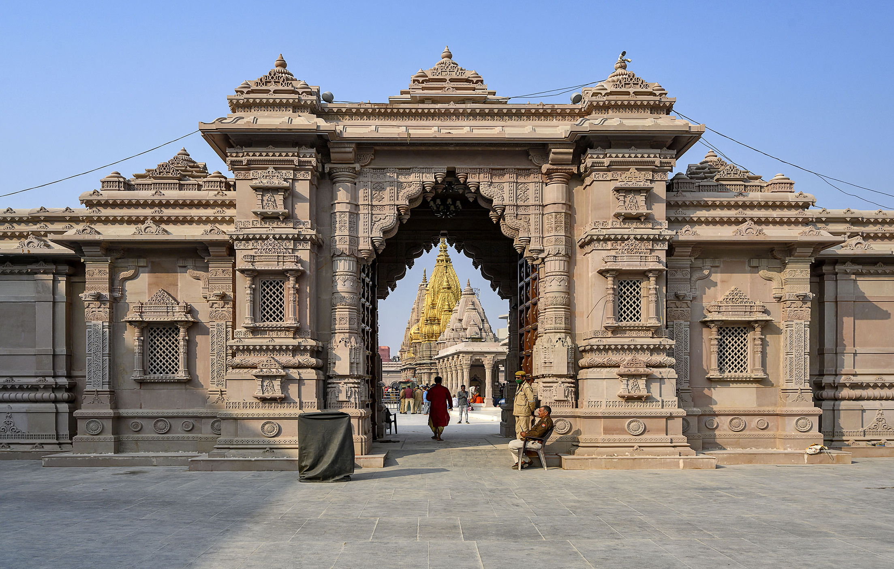
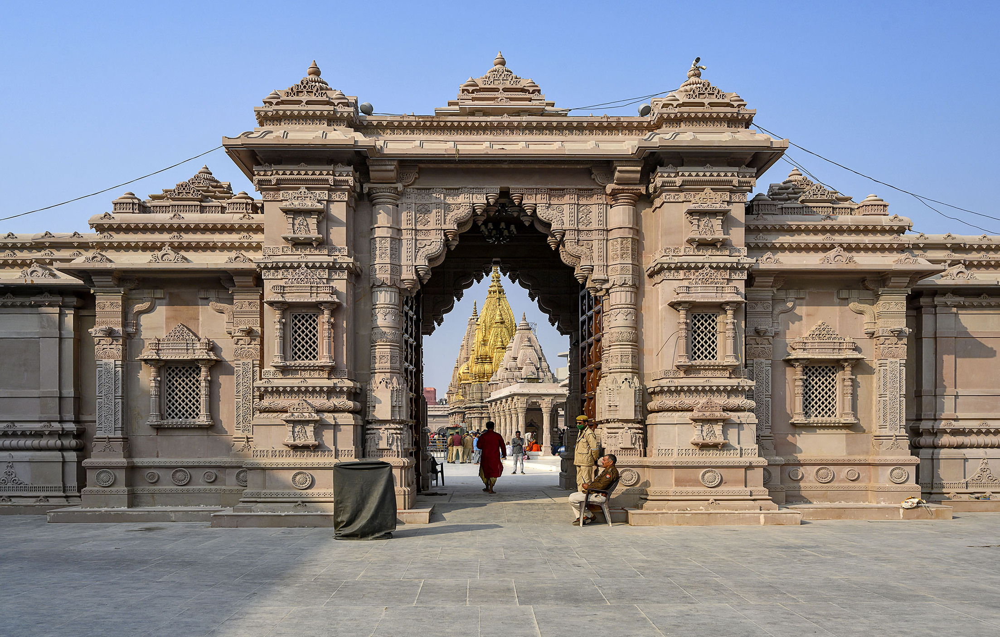

Varanasi, or Benaras, (also known as Kashi) is one of the oldest living cities in the world. Varanasi`s Prominence in Hindu mythology is virtually unrevealed. Mark Twain, the English author and literature, who was enthralled by the legend and sanctity of Benaras, once wrote : “Benaras is older than history, older than tradition, older even than legend and looks twice as old as all of them put together”. The land of Varanasi (Kashi) has been the ultimate pilgrimage spot for Hindus for ages. Hindus believe that one who is graced to die on the land of Varanasi would attain salvation and freedom from the cycle of birth and re-birth. Abode of Lord Shiva and Parvati, the origins of Varanasi are yet unknown. Ganges in Varanasi is believed to have the power to wash away the sins of mortals. Hindus believe that one who is graced to die on the land of Varanasi would attain salvation and freedom from the cycle of birth and re-birth. The city is a center of learning and civilization for over 3000 years. Ganges is said to have its origins in the tresses of Lord Shiva and in Varanasi, it expands to the mighty river that we know of. With Sarnath, the place where Buddha preached his first sermon after enlightenment, just 10 km away, Varanasi has been a symbol of Hindu renaissance. Knowledge, philosophy, culture, devotion to Gods, Indian arts and crafts have all flourished here for centuries. Also a pilgrimage place for Jains, Varanasi is believed to be the birthplace of Parsvanath, the twenty-third Tirthankar. Vaishnavism and Shaivism have co-existed in Varanasi harmoniously. Varanasi has also been a great center of learning for ages. Varanasi is associated with promotion of spiritualism, mysticism, Sanskrit, yoga and Hindi language and honored authors such as the ever-famous novelist Prem Chand and Tulsi Das, the famous saint-poet who wrote Ram Charit Manas. Aptly called as the cultural capital of India, Varanasi has provided the right platform for all cultural activities to flourish. Many exponents of dance and music have come from Varanasi. Ravi Shankar, the internationally renowned Sitar maestro and Ustad Bismillah Khan, (the famous Shehnai player) are all sons of the blessed city or have lived here for major part of their lives. With a number of temples, Mrs. Annie Besant chose Varanasi as the home for her ‘Theosophical Society’ and Pandit Madan Mohan Malviya, to institute ‘Benares Hindu University, the biggest University in Asia. Ayurveda is said to be originated at Varanasi and is believed to be the basis of modern medical sciences such as Plastic surgery, Cataract and Calculus operations. Maharshi Patanjali, the preceptor of Ayurveda and Yoga, was also affiliated with Varanasi, the holy city. Varanasi is also famous for its trade and commerce, especially for the finest silks and gold and silver brocades, since the early days.
Explore the delectable street food of Varanasi. Indulge in the flavors of the city's culinary delights. Here are some of the best places to savor authentic Varanasi street food:
Every month, a night is celebrated as Shivratri. However, the Mahashivratri is the most significant one. There are numerous mythological stories to why this festival is celebrated. In short, devotees stay awake the whole night performing rituals to Lord Shiva at equal intervals. In between, to avoid falling asleep they conduct many cultural programs, local games, and others. Dance, music, and other celebrations are quite common in Lord Shiva temples. Kashi Vishwanath Temple will be in grand beauty with fairs, rituals, cultural celebrations, and much more.prayers to Lord Shiva. The city comes alive with religious processions, rituals, and cultural events.
The month of Shravan starts in July and ends in August. Every Monday of this Shravan month is considered auspicious for Lord Shiva and every Tuesdays for Lord Parvathi. Thus, the eight days of Shravan are celebrated with fasting, rituals, and much more. This festival is associated with monsoon. According to literature, this fasting and ritual prepares the body to withstand the change in climate during rainfall. Every Shiva temple of Varanasi will conduct unique rituals during these eight days. Fairs will be conducted around certain temples.
Fifteen days after Diwali, people celebrate Dev Diwali by decorating the houses and temples with hundreds of small earthen lamps. People let go of thousands of small oil lamps on the River Ganges on a leaf. The lamps will slowly float along the small ripples of the water. By night, you can find many processions of deities from temple, grand fireworks, and much more. Many unique rituals take place in the temples, during this festival. If you love photography, this is the best festival to enjoy.
Four days after Diwali, Annakut is celebrated. According to mythology, this is the day when Lord Krishna lifted up Govardhan Hill to protect his folks from the wrath of Indra. People celebrate this festival by conducting rituals for Lord Krishna. Delicacies made with gram four and rice are common during this festival. You can find many drama recitals about childhood stories of Lord Krishna during this festival.
Some communities within Hinduism start Holi celebration from Rangbhari Ekadashi. Rangbhari is the offspring of Lord Brahma, who can wash off humanely sins from soul. According to legends, after killing King Raavan, Lord Ram worshipped Rangbhari to wash off his sins. During this day, many rituals are conducted at Kashi Vishwanath Temple for Rangbhari and people pray to wash off their sins for ultimate salvation.
Ram Leela is one of the grandest festivals of all in Varanasi. This festival starts ten days prior to Dussehra. This marks the ten-day battle between Lord Ram and Raavan in which, Lord Ram killed Raavan on the tenth day, Dusshera. Raam leela is famous for dance drama performances, which explains the war, childhood of Ram, and other stories related to Lord Ram and Sita. Fairs, dance performances, puppet shows, and other cultural activities take place in numerous temples. Special rituals will be conducted in the temples throughout the festival.
Akshaya Tritiya is associated with two mythologies. This is the birth anniversary of Lord Parsuram. This is day when Lord Ganesh started writing the epic, Mahabharata. This day is also considered as the day of Lord Vishnu and Lakshmi. This day is associated with wealth. According to mythology, any wealth procured on this day will lead to years of prosperity. People rush to buy gold and other wealth on this day.
Panch Koshi Parkrama is a religious festival celebrated by the womenfolk. The ritual is assumed to be complete only when the person visits the five main religious sites of Hinduism, Rameshwar, Shivpur, Kardmeshwar, Kapildhara, and Bhimchandi. During this festival, a procession starts at Manikarnika Ghat and goes around many temples and ends at Manikarnika Ghat. Only the womenfolk participate in this procession. After the procession, women take a holy dip in the River Ganges and end their fast since morning.
This festival was first celebrated in 16th century by Tulsidas, a great poet and saint. This day marks the epic battle between Lord Krishna and Kaliya Nag in the River Yamuna. At Tulsi Ghat, children dressed as Lord Krishna are made to stand on statues of snakes, on the River Ganges, near Tulsi Ghat. Many rituals and celebrations take place in the temples of Lord Krishna. Krishna Leela drama is enacted at many places during this festival.
This festival takes place at Nati Imli of Varanasi. This festival is celebrated as the day of reunion of Lord Ram with his brother Bharat. During this festival, a large fair is conduced and many rituals and celebrations take place in the temples. This festival celebrates the beauty of brotherly love and the fact that Good always prevails. The royal family of Varanasi visits the celebrations during this festival.
This festival marks the day when Lakshman cut the nose of Surpanakha (Raavan’s sister). The main element of this festival is the Nakkatayya drama, which is enacted by the folk artists about the scene of cutting the nose, and how it became the reason for the epic war between Lord Ram and Raavan.
The Dhrupad Mela is an annual festival of music conducted in Varanasi. This festival focuses on traditional forms of classic music. A fair is conducted for entertaining people with stalls, entertainment activities, and so on. The music performances by the artists start right after sunrise. Many cultural programs will be conducted in the Assi Ghat, every morning for four days. On the fourth day, the last day of celebration, many international music performances and folk music shows also take place.
Masan Holi, a celebration mostly observed among Shiva devotees using pyre ashes in the Manikarnika ghat in Varanasi has caught the attention of a lot of people. As Holi approaches, various Indian states have begun celebrating the festival according to their unique traditions and cultures. In Uttar Pradesh's Varanasi, a large group of people gathered at the Manikarnika Ghat to observe the tradition of 'Masan Holi'. This tradition involves playing Holi with ashes from the pyre, creating a distinctive and memorable experience. The celebrants can be seen swaying and dancing to the tune of Bhajans, while the sounds of Damrus and chants of 'Bhole' are audible. A video is going viral on internet wherein people can be seen playing the festival in the most joyful and lively atmosphere.
 

We hope you enjoyed learning about the rich history and culture of Varanasi.